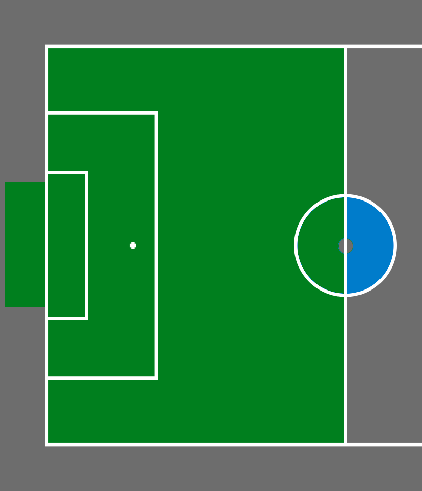
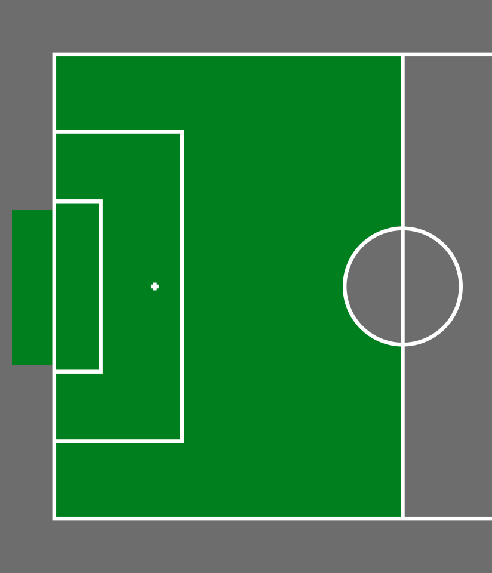
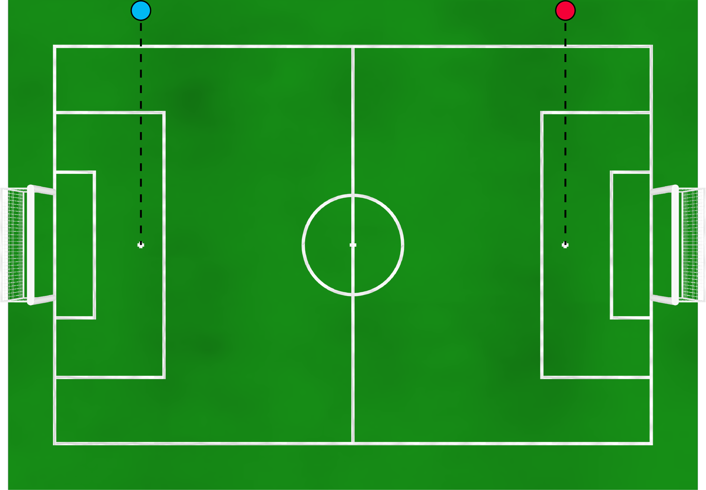
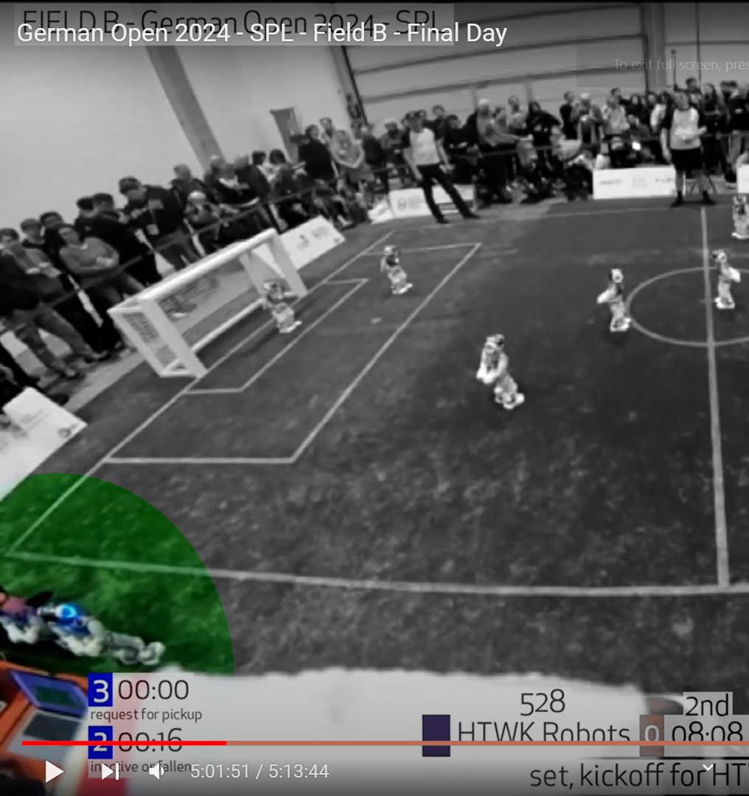
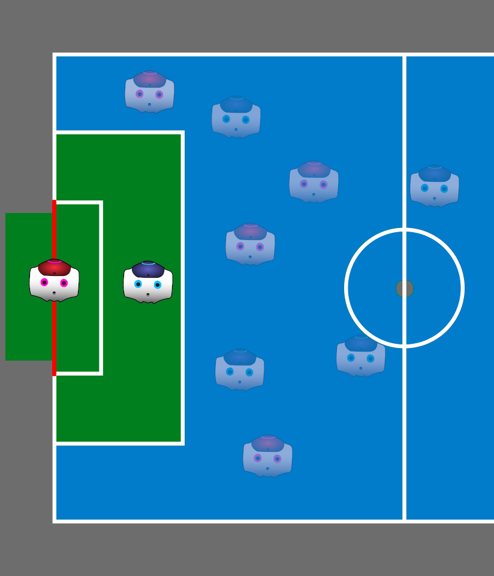
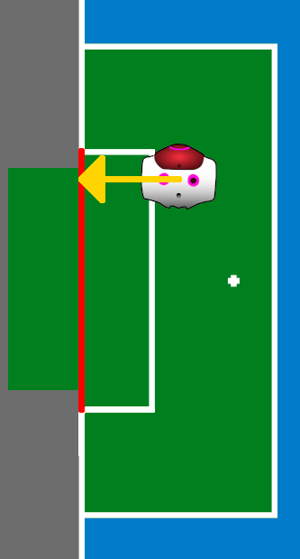

RoboCup HSL Referee Training
Referee Roles
- Head referee: Main authority of the game. Adjudicate events, assign penalties, ...
- Assistant referees: Additional pairs of eyes and ball handlers. Track the ball when it goes out, informs of events out of head red's sight, ...
- GameController operator: Enforce the decisions of humans via the GC. Start the game, award goals, start and end penalties, ...
Team officials
- Team captain: represents the team
- Robot handlers: on the field, move their robots around to execute ref decisions (penalty, untangle, ...)
- GameController contact: sits next to GC operator, tells them when robots are ready for penalty etc.
Pregame Meeting
- Decide Foundation or Advanced (Foundation if disagreement)
- Decide jersey colors
- Field-Side selection and Initial Kick-Off by coin toss
- Any other game related topic
- 10 minutes before the game starts
Interleaved reffing
TODO: is this a thing this year?
- Pregame meeting on both fields
- First half on field A
- All Refs switch field, first half on field B
- All Refs switch back, second half on field A
- All Refs switch back, second half on field B
Kick-off
Attacking team

- At most 1 robot in the blue area
- If so, that robot must kick off
Kick-off
Defending team

Interference with kick: retake (reposition ball, don't click ball free)
Indirect kick rule
ANY TWO robots must have touched the ball before a goal can be scored
If kicking team has 2 or less robots, move ball by 1 center circle radius
Invalid direct goal → goal kick for the opponents
Ending the game
The clock is not absolute, allow the action to finish
- End game when ball stops, not when time ends
- Wait for penalty kick to finish before ending the game
In-place penalty
Formalized after German Open
- After calling Motion In Set, the robot is not picked up. It must remain where it is.
- The robot must stay still for the first 15 seconds of Playing, and then resume motion on its own.
Standard removal penalty
- Handler can bring robot to team or directly to re-entry point
- GC: click robot button when the robot is ready for penalty
- "Advantage rule": you can hold on calling a penalty if the team being fouled is benefitting from the current situation
Re-entry point

Re-entry point

Brief stop
For any situation where a human has to enter the field:
- Free kicks (automatic)
- Penalized robot
- Entangled robots
- Also for emergency reasons
- And any other time when deemed relevant
Motion in Stop
Formalized after German Open
- Robot moves during a brief stop
- Standard removal penalty
- Yellow/Red card if the stop was due to an emergency situation
Pushing
Forceful, disruptive, or prolonged contact
FAQ
- Front-to-front fights for the ball: okay as long as no one is more forceful than the other
- Stationary robot: cannot push
- Pushing a fallen robot: offense
- Pushing a larger robot: offense
Other cases: open to interpretation, but don't be too lenient
Request for pick-up
- Only from team captain or robot handler
- Accept ONLY to avoid dangerous situations (change from SPL)
- The team can have the robot on the next penalty
Yellow and red cards
Change from both leagues
- Show them for dangerous behavior, typically on top of a normal penalty
- Examples: damage to the field, damage to another robot, endangering humans
- Assigned to individual robots, not jersey numbers
- Also for repeated, deliberate violation of the rules
- Use them sparingly! Timed penalties are enough for routine offenses
Free kicks
Formalized after German Open
- Kick-in (indirect)
- Corner kick (direct)
- Goal kick (direct)
- Pushing free kick (direct)
Note: defenders can always score directly
Free kicks
- Defenders: 1 center circle radius from the ball
- (outside of penalty area for goal kicks)
- Defenders who found themselves inside are okay as long as they're leaving
- Interference with kick: retake (reposition ball, don't click ball free)
Free kicks
"Double touch rule"
- If the kicker plays ball twice in a row: indirect free kick for the other team
- Only applies if attackers have 3 or more robots
Penalty kicks
Formalized after German Open
- A robot commits pushing close to the ball in their own penalty area
- State immediately becomes Ready: autonomous positioning
- Set: place ball, correct goalie position
- Play: striker attempts kick
- Direct goal: valid, award point and go to kick-off
- Striker plays ball twice or no goal: ball free, regular play resumes immediately, indirect kick rule applies
Penalty kicks

- Only 1 striker in penalty area (green)
- Only 1 goalkeeper on goal line (red)
- Goalkeeper cannot dive until ball kicked
- Everyone else outside until kick complete
Penalty kicks

On Set, if goalie not on goal line: put it on line by moving the least possible distance
Substitution procedure
Formalized after German Open
For a robot in play:
- Allowed in Initial (incl. timeout), Set and Finish
- Old player is removed from field
- New player can enter immediately...
- ...OR it can wait in maintenance and enter later (no penalty timer)
- Entry at the standard point
Substitution procedure
For a penalized robot:
- Allowed in Initial (incl. timeout), Set, Finish and brief stop
- New player inherits penalty timer of old
- Re-enters after penalty as normal
Allowance for time lost
- Add whole minutes to the clock if much time was lost
- NOT for regular use - the schedule is tight
People allowed on the field
- Referees
- Robot handlers
- No one else
Keep other people out of the carpet!
Underage children
Teams PCMS-HSG and Mountain have members less than 18 years old
- Minors are not allowed on the carpeted area during official games for any reasons
- Minors cannot referee
- Minors cannot be robot handlers
Your decisions are final
Don't change them
Mistakes are okay as long as you strive to be impartial
Recovering from mistakes
- If the GC is brought into a wrong state, it might be recoverable: ask the TC
- Penalties CANNOT be undone, but they can be aborted: place robot on re-entry point, then GC does Shift+click
Best practices
- Have a referee discussion before the game
- Be loud and clear! You have to be heard by everyone else on the other side of the field
- Stop play first, call free kick or penalty later
- Use yellow/red cards sparingly
GC Operator best practices
- Call every button you click
- Call time-based events (Set, ball free, end penalty, last 10 secs of Play, ...)
- Stop Play mode: click button or Spacebar
- Free kicks automatically stop play (click Resume Play)
Best referee voting
- The best referee team will win a certificate
- Do your best! :)
TC, OC
Do what we do, but better: Apply by 2nd of July. Details can be found in Discord.
Thanks for your attention
Questions?